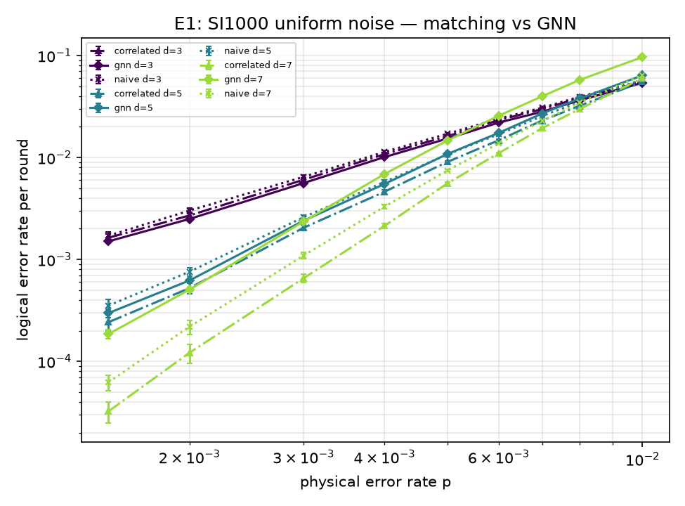
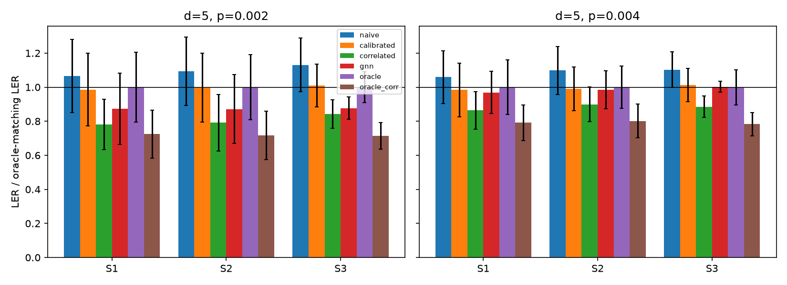
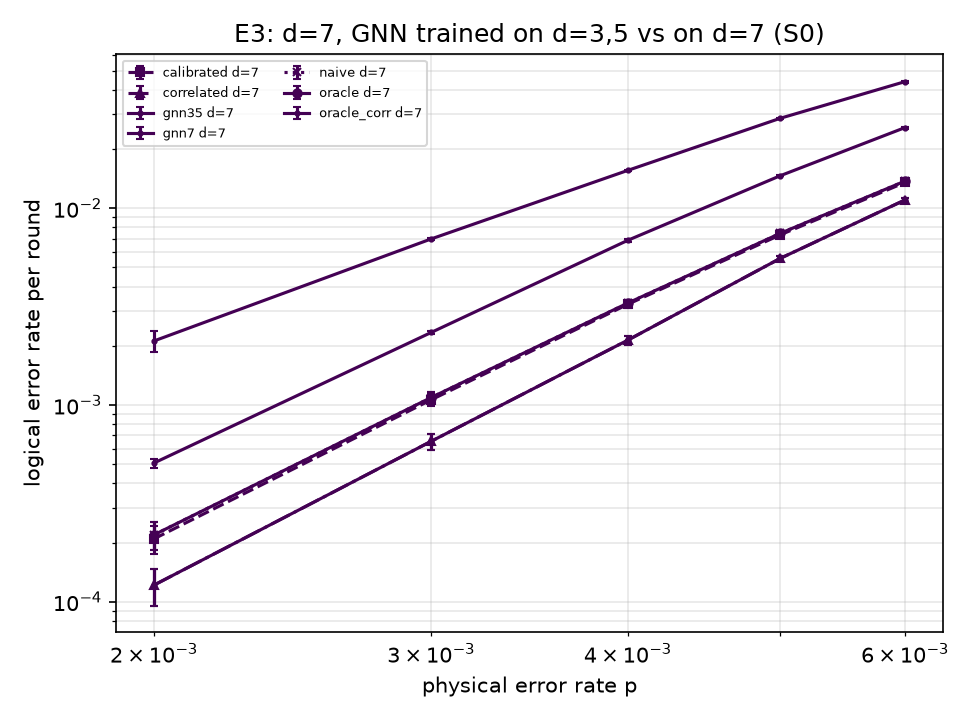
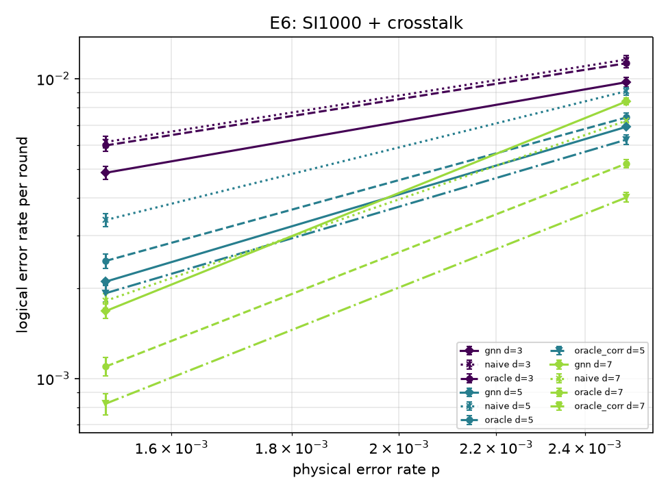
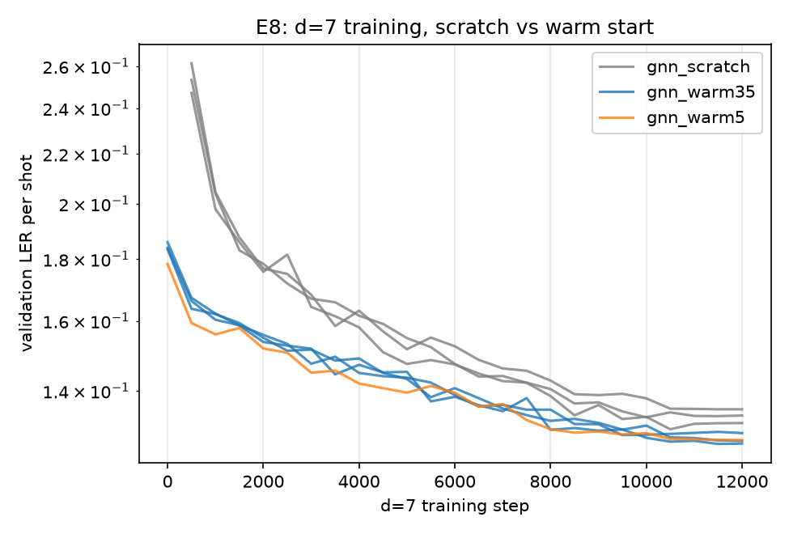
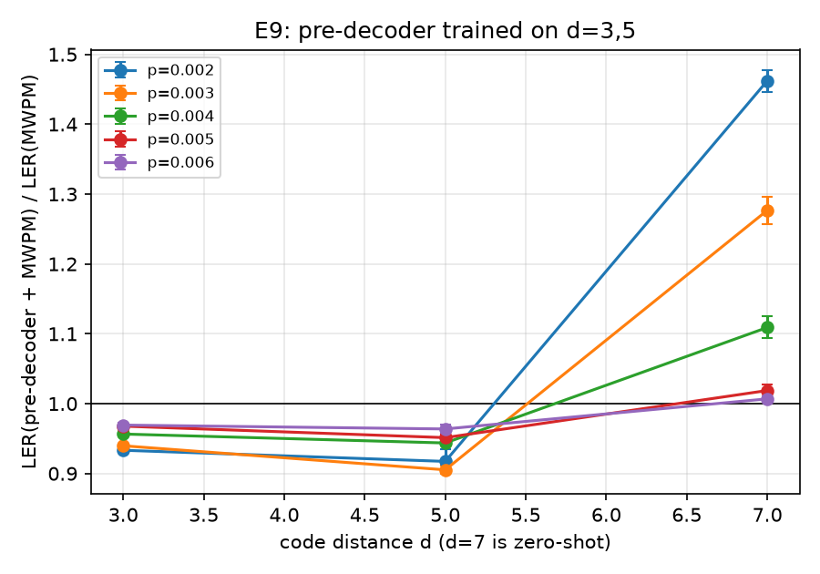
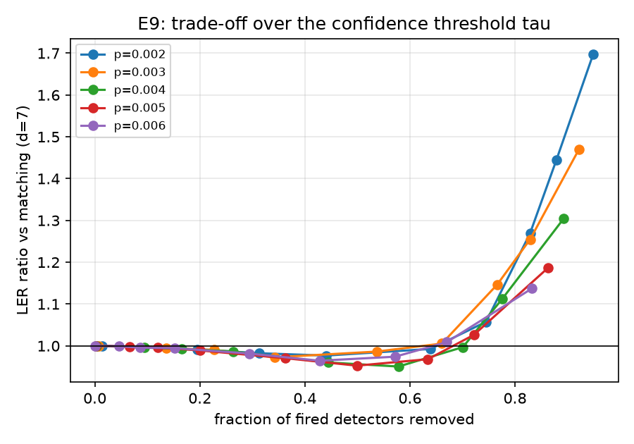
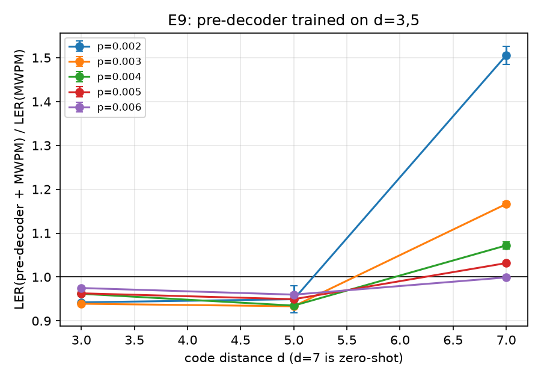

Summary
The starting hypothesis was that a decoder trained only on syndromes, which therefore learns the real noise, would beat matching when matching's noise model is wrong. That was only weakly supported, and the GNN did not scale to distance 7. A different design, a local pre-decoder that clears easy faults and leaves the rest to matching, did better, and a stricter confidence threshold for it was confirmed on fresh shots under a pre-written rule.
Setup
Background
A stabiliser code is defined by a binary parity-check matrix H. Qubit errors e in F2n give the syndrome s = H e (mod 2). Decoding means choosing a correction with the same syndrome that preserves the logical state.
- Matching builds a graph whose nodes are check outcomes ("detectors") and whose edges are single faults, weighted
log((1-p)/p). The most likely error is the minimum-weight set of edges pairing up the fired detectors. It is exact for independent, graph-like faults. - Where it breaks: a Y error or a correlated two-qubit fault flips X-type and Z-type detectors at once, so matching must split it and loses the correlation. Matching is also only as good as the weights it is given.
- A neural decoder learns the map from syndrome to logical flip directly, never sees a noise model, and can in principle exploit correlations and hardware-specific rates.
Code, noise and metric
Rotated surface code, Z-basis memory, rounds = d, simulated with Stim. The logical error rate (LER) is reported per round, ε = ½(1 − (1 − 2PL)1/r), so distances are comparable. The base noise is SI1000 (two-qubit gates p, single-qubit gates p/10, resets 2p, measurements 5p, idling p/10), inserted by our own pass so each qubit and gate can have its own rate; with uniform rates it reproduces Stim's built-in noise exactly (unit-tested). The SI1000 threshold measured here is about 0.83%.
| ID | Scenario | True noise |
|---|
A device instance is one seeded random draw of the rates; S1 to S3 are averaged over 3 instances. S4's strength was lowered from 1.0 to 0.25 because at 1.0 the code was above threshold.
Decoders (all decode the same sampled syndromes)
| Decoder | What it knows |
|---|
The GNN
Plain PyTorch, 133,761 parameters. Nodes are the fired detectors only, with distance-independent features (stabiliser type, distances to the four lattice boundaries, first/last-round flags). Edges join the 8 nearest neighbours in space-time. Four message-passing layers (hidden 64, residual + LayerNorm), mean and max pooling, MLP head. The same weights run at any distance. Training: shots sampled on the fly from Stim across a band of error rates, Adam with cosine decay, 12,000 steps of 1,024 shots (about 12M shots), early stopping on a validation set disjoint from the test set.
Statistics
Test shots are sampled until the oracle has seen at least 100 logical errors (typically 105 or more shots per point). Wilson 95% intervals are stored per point; the pre-decoder study (E9, E9b) also stores per-shot results and uses exact paired McNemar tests. Seed ranges for training, validation and test never overlap (unit-tested).
Results
Explore the measurements
Mean per-round logical error rate against physical error rate. Click a legend entry to hide or show a decoder. The GNN is the mean over training seeds.
E1 · uniform noise (control)
Under uniform noise naive, calibrated and oracle matching coincide, so only structural differences remain. The GNN is lowest at d = 3. Against correlated matching its margin is small (per-shot 0.0075 vs 0.0080 at p = 0.002, overlapping intervals); against naive and calibrated matching it is clear. Error suppression per distance step at p = 0.002 is Λ ≈ 3.7 for naive matching, 4.7 for correlated matching and 2.2 for the GNN.

E2 · mismatched noise (S1 to S3)
Per-round LER at p = 0.004, scenario S2, mean over 3 device instances (S1 and S3 look the same).
- Mismatch is a small effect for matching. Naive is only about 10% worse than oracle at d = 5, and calibrated matching recovers essentially all of it from syndrome data alone. That leaves a learned decoder little to win.
- At d = 5 the GNN matches oracle matching, but the differences among naive, calibrated, oracle and GNN are within the error bars (standard deviations over only 3 device instances). Only the correlated variants are clearly better.
- At d = 7 the GNN is about 2× worse than everything.

E3 · transfer from d = 3, 5 to d = 7
At d = 7, p = 0.004, S0: a GNN trained on d = 3 and 5 reaches 1.56e-02; trained at d = 7 it reaches 6.87e-03; naive matching 3.30e-03. In S1 across unseen devices: 1.66e-02 (transfer), 7.44e-03 (d = 7), 3.31e-03 (naive), 3.05e-03 (oracle). Zero-shot transfer fails (2.3× worse than in-distribution), and even the in-distribution d = 7 GNN is about 2× worse than matching. An 8-layer, hidden-96 ablation did worse (validation LER 0.159 vs 0.132 to 0.135): the larger model trained more slowly and had not caught up after 12,000 steps.

E4 · data efficiency (S2, d = 5, p = 0.004)
Calibrated matching reaches the oracle with about 104 shots. The GNN needs about 106 and only then catches up, roughly 100× more data (mean of 3 seeds). Oracle matching: 6.29e-03; naive: 6.95e-03.
E5 · latency
Median microseconds per round, p = 0.004, S0. Superconducting hardware needs roughly 1 µs per round. PyMatching (C++) is close; this Python/PyTorch GNN is 100 to 1000× too slow for online decoding. Measured on a shared cloud VM (about a 13-CPU slice), so absolute values are indicative; it says nothing about FPGA or ASIC feasibility.
E6 · crosstalk (S4): the GNN's best result
Per-round LER at p = 0.0025. At d = 3 the GNN is below every matching variant. At d = 5 it beats naive, calibrated, correlated and oracle matching, which cannot represent the crosstalk correlations exactly even with the true error model (per-shot 0.0338 [0.0327, 0.0349] for the GNN vs 0.0360 [0.0349, 0.0372] for oracle). Correlated matching on the true model (oracle_corr, 0.0305 per shot) remains better. At d = 7 the GNN is behind again.

A matching-graph pitfall found along the way
In a first run the d = 3 oracle was worse than naive matching. Under crosstalk two different faults flip the same detector, one with a logical flip (probability 0.0125) and one without (0.000625). A matching graph holds one logical-flip label per edge, and PyMatching's merge kept the wrong one. Restoring the correct label cut that decoder's error from 4.44% to 3.29% per shot. src/dem_tools.py now builds matching graphs that keep the label of the most probable mechanism, and it is identical to PyMatching's default wherever there are no such conflicts (zero differing predictions on 100,000 shots in S0, S2 and S4). PyMatching's correlated mode cannot be rebuilt this way, so oracle_corr is omitted at d = 3. The first run is preserved in runs/2026-11-20_baseline_v1, the corrected one in runs/2026-11-24_v2_e6_robust_matching.
E7 · adapting to drift inconclusive
The drift (δ = 0.3) was too weak to matter: stale decoders were already within 2% of oracle matching, so there was nothing for adaptation to recover. With 103 new shots both recalibrated matching and the fine-tuned GNN get worse because they overfit. A stronger drift would be needed for a meaningful test.
E8 · warm-starting the d = 7 GNN
The GNN's weights do not depend on code distance, so a d = 7 model can start from one trained on smaller codes. Warm starting helps consistently but not enough: on average 15% lower test error than from scratch (24% at p = 0.002, 8% at p = 0.006), and about a quarter fewer steps to reach the scratch runs' best validation score. It is still 1.8× worse than naive matching and 2.9× worse than correlated matching, so initialisation is not the main obstacle. Together with the failed 8-layer ablation this points at the model's limited view of a d = 7 code, which is untested.

The neural pre-decoder (E9 and E9b)
A different way to combine the two. A local GNN removes the easy faults and matching decodes what is left. Stim's fault sampler says exactly which faults fired. A fault is isolated if no other fired fault touches either of its detectors, which makes it the unambiguous explanation of those detectors. The pre-decoder scores every candidate (a pair of fired detectors that is a matching edge, or a fired detector with a boundary edge), removes those scored at least τ without reusing a detector, applies the removed faults' logical labels, and hands the residual syndrome to the same matching graph and weights as the baseline. Same 134k-parameter architecture and recipe as the GNN; three seeds trained on d = 3 and 5, one reference trained at d = 7.
Pre-registration: what was decided before looking
- Design and rule written downPositive if, at d = 7 zero-shot and p = 0.002, the error ratio is at most 1.05 and at least 30% of fired detectors are removed.
- Threshold chosen on d = 5 validation shots onlyτ = 0.7, committed before any test shot was run.
- E9 test: verdict "partial"88% removed (bar met) but ratio 1.46 (bar not met; paired p about 1e-40).
- Exploratory sweep on already-seen shotsA stricter τ looked as if it would transfer. This does not change the E9 verdict.
- Amendment 11.1, committed before any fresh test shotAdds a fixed τ = 0.95 as arm B, disclosing that the idea came from looking at E9's test shots.
- E9b on fresh shots: arm B positiveRatio 0.978 at p = 0.002 while removing 63%.
E9 · ratio of logical error rate, pre-decoder + matching over matching alone (below 1 is better)
- Where it was trained it beats matching while removing 71 to 90% of the detectors. At d = 3 every paired comparison has p < 1e-11; at d = 5 the gain is significant from p = 0.004 upward and marginal at p = 0.002.
- At d = 7 it gets worse as the error rate falls, and the d = 7-trained reference does too (ratio 1.30 at p = 0.002), so this is not only a transfer failure.
- Removal precision is not the problem: at τ = 0.7 the fraction of removed faults that were truly isolated is 0.925 to 0.967 and no lower at d = 7. A working explanation, not tested: matching's own failures become extremely rare at d = 7 and low p, so a few percent of wrong removals dominate.
- Speed is a net loss as implemented. Matching on the residual is 3 to 5× faster than on the full syndrome (1.7 vs 6.2 µs per shot at d = 7, p = 0.002), but the Python pre-decoder costs 45 to 402 µs per shot, so the combination is 23 to 31× slower than matching on a CPU. This says nothing about a hardware implementation.
Try the threshold dial on the real d = 7 data
Real E9 sweep, distance 7, one trained pre-decoder (seed 0). The curve crosses 100% at roughly 70% removal. Note that this sweep used test shots that had already been seen, so it is exploratory; the confirmed result is in the next table.
E9b · confirmatory test of a stricter threshold, on fresh shots
Same four trained models, nothing retrained, both arms decoding the same fresh shots. Arm A applies the pre-registered selection rule (largest-removal τ with ratio at most 1.02 at every p on fresh d = 5 validation shots); it selected τ = 0.7 again, because d = 5 validation cannot see the d = 7, low-p problem. Arm B is a fixed τ = 0.95, added by amendment before any fresh test shot.
- The d = 7-trained reference at τ = 0.95 has ratio 0.924 at p = 0.002 (73% removed).
- The strict threshold costs in-distribution gain. At τ = 0.95 the d = 3 gain disappears (ratio 0.998 to 1.000) and the d = 5 gain shrinks to 0.96 to 0.99. No single τ is best everywhere: 0.7 gives more where it was trained; 0.95 is the safe choice for transfer.
- Caveats: the value 0.95 and the idea came from looking at E9's test shots, so this is not an independent discovery (disclosed in the pre-registration); only one τ was tested; S0 noise and d at most 7 only; and the speed problem remains.



Limitations
- The d = 7 failure is not a general verdict on neural decoders. Four message-passing layers, 12M training shots and one hyper-parameter setting; validation error was still falling slowly, and one capacity ablation made it worse. Whether a larger receptive field, longer training or a pre-decoder would fix it is untested beyond E9b.
- The mismatch hypothesis had little headroom: with σ = 0.5, 3 bad couplers at 8× and drift δ = 0.3, calibrated matching nearly closes the gap by itself. Stronger or differently structured mismatch might show more.
- E2 error bars are standard deviations over only 3 device instances; many differences are within them.
- Simulated Pauli noise only: no leakage, erasure or real hardware data. One code family, one memory basis (Z).
- The stricter threshold of E9b was suggested by E9's test shots. It was confirmed on fresh shots with the rule fixed in advance, but the idea is not independent of that earlier look, and only one τ was tested.
- Test shots are not bit-identical across machines, so re-running elsewhere can move individual points by a few percent; compare runs with
scripts/compare_runs.pyand judge against the stated intervals. - Latency is measured in Python on CPU and one GPU; it says nothing about FPGA or ASIC feasibility.
Reproduce
uv venv --python 3.12 && .venv/Scripts/activate uv pip install stim pymatching sinter torch numpy matplotlib pytest python -m pytest # about 170 tests, under a minute # GNN decoder (E1 to E8): train, then evaluate (every script takes --shard i/n) python -m experiments.train_jobs --device cuda python -m experiments.e1_control --shard 0/27 python -m experiments.e1_control --plot # Pre-decoder (E9, E9b): train, choose tau on validation shots, test on fresh shots python -m experiments.train_jobs --predecoder --device cuda python -m experiments.e9_predecoder --select-tau # commit results/e9_tau.json BEFORE testing python -m experiments.e9_predecoder --shard 0/5 python -m experiments.e9_predecoder --confirm-select python -m experiments.e9_predecoder --confirm-shard 0/5
You do not need to retrain to inspect the results: every number here comes from results/ and runs/ (one folder per recorded run with its environment and metrics). Trained checkpoints (about 47 MB) are not in the repository. Compute used: the 59 GNN jobs plus the ablation took about 4 hours on one RTX 4090 (about US$3 on RunPod Secure Cloud); E8 about US$0.58 and E9 about US$0.71. E9b ran on a local CPU.
This page's charts read eli5/data.js, generated from the stored results by scripts/make_eli5_data.py. Tables for E1 to E9 (except E9b, which is generated) are typed from the repository README, which is itself generated from the same files.